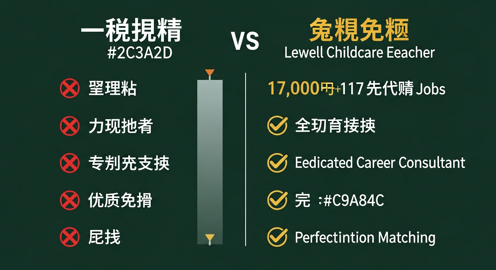

年4,000回・17,000件のアンケートには、改善してほしい点・不満点も含まれています——良いことだけを伝えるサービスとは、構造が違います。

焦って転職先を決めたことを後悔しています。あんなに辞めたかった前の職場に戻りたいとも思うくらいです。
出典：co-medical.com / 保育士の転職体験談
園見学ではみんな笑顔で雰囲気が良さそうだったのに、入ってみたらベテランの先生のグループが強くて、新しい意見は一切通らなかったんです…。誰も助けてくれず、1年で辞めることになりました。
出典：hoikucollection.jp / 保育士の転職体験談
持ち帰りは常にあり帰りも遅い。家では持ち帰りのせいで睡眠時間が2時間しかない日もあった。
出典：hoipura.jp / 保育士の職場口コミ
入職してから気づいた。残業時間は、聞いていた話より多かった。
前任者がなぜ辞めたのか、面接では誰も教えてくれなかった。
採用担当者が嘘をついていたとは思わない。ただ、担当者の仕事は「あなたに入ってもらうこと」だった。あなたが「入ってよかった」と思うかどうかは、評価対象ではなかった。
あの失敗はなぜ起きたのか。その答えが、次の転職の出発点になります。
採用担当者は採用のために動いています。それは嘘ではなく、仕組みの問題です。採用という目的があれば、伝える情報は自然と「応募したくなる内容」に寄る。「騙された」のではなく、「そうなる構造の中にいた」という話です。
採用担当者の情報フロー
採用担当者 → 「採用したい」という動機
↓
良い情報だけが求職者に届く
採用担当者ではなく、実際に働く現場スタッフから情報を取れていたら、結果は変わっていたかもしれません。この問いへの答えを、次のセクションで説明します。
従来の転職エージェント
vs
レバウェル保育士
4,000回※
年間の現場訪問数
17,000件※
アンケート実施件数
※数字はレバウェル保育士公式情報に基づく。最終更新日は公式ページをご確認ください。
採用担当者には聞けなかった情報を、入職前に確認できます
現場スタッフへのアンケートをもとに、残業の実態・前任者の退職理由・職場の人間関係について、担当者が詳しくご説明します。求人票に書かれていない情報を、入職前に知ることができます。「聞いていた話と違った」という経験が過去にあるなら、その違いがなぜ起きたのかを、構造として理解した上で次の一歩を踏み出せます。
転職するかどうかも含めて、あなたのペースで相談できます
「迷っている段階」での相談を歓迎しています。転職時期の決定はあなた次第です。「いつまでに決めてください」とお伝えすることはありません。情報を確認しながら、自分で判断する——そのプロセスを支える相談相手として使っていただけます。
急かしません。いつでも退会できます
担当者から連絡が来ても、断っていただいてかまいません。登録後に「やっぱり今は動けない」と感じたら、いつでも退会できます。内定を辞退しても、怒ることもありません。
4,000回※
年間の現場訪問数
17,000件※
アンケート実施件数
※上記数字はレバウェル保育士の公式情報に基づきます。
急かされなかった・自分のペースで進められた
焦らせるようなことも一切なく、こちらのペースに合わせて丁寧にサポートしてくれました。転職するか迷っている段階で相談しましたが、無理に応募を勧められませんでした。
出典：simples.co.jp / レバウェル保育士 利用者レビュー
入職後のギャップがなかった・現場情報を事前確認できた
求人票だけでは分からない園の雰囲気を詳しく教えてもらえました。残業や人間関係についても事前に確認できたので、安心して応募できました。
出典：simples.co.jp / レバウェル保育士 利用者レビュー
担当者に情報をしっかり伝えてもらえた
私の希望をしっかりとヒアリングしてくれ、それに合った求人だけを紹介してくれました。良い面だけでなく、注意すべき点も正直に話してくれたので、入職後のギャップがなく安心できました。
出典：simples.co.jp / レバウェル保育士 利用者レビュー
入職してから3ヶ月が経った。残業時間については、聞いていた通りだった。前任者が辞めた理由も、事前に教えてもらっていたことと変わらなかった。「また騙されるかもしれない」という緊張感を持ちながら過ごした最初の数週間が、少しずつほどけていくのがわかった。担当者に言われていたことと、目の前の現実が、ずれていない。子どもたちの前で、はじめて素直に笑えた気がした。それだけで、ずいぶん違う毎日になった。
緊張が消えた分、目の前の子どもたちをちゃんと見られるようになった。前の職場では、保育のことよりも「また何かトラブルにならないか」「あの先生の顔色はどうか」ということに、気力を使っていた。職場の空気を読むことで精一杯で、子どもが何を感じているか、ゆっくり考える余裕がなかった。今は、保育のことだけを考えて出勤できる。「転職してよかった」と心から思えたのは、そのときだった。
大成功でした。収入面や年間休日、通勤時間などほぼほぼ希望通りで、働き始めてからも偽りはありません。
出典：hoiku-labo.com / 保育士転職体験談
おかげで、今はストレスなく、笑顔で保育に集中できています。
出典：simples.co.jp / 保育士転職体験談
辞めてよかった、って心から思う。
出典：hoiku-pocket.jp / 保育士転職体験談
フォームで無料登録（約30秒）
名前・お住まいのエリア・希望の勤務条件を入力するだけです。資格証のコピーや職歴書の準備は、この段階では必要ありません。
担当者よりご連絡いたします
登録後、担当者よりご連絡いたします。連絡の方法・タイミングについては、フォーム内でご希望をお伝えいただけます。
現場の情報を確認しながら、転職するかどうかも含めて相談
「この園の残業の実態を知りたい」「前任者が辞めた理由を確認したい」という具体的な質問から始めていただいて構いません。転職するかどうかの判断は、情報を確認してからで十分です。
断っても怒りません。しつこく連絡することもありません。「今は動けない」「この求人は合わない」とお伝えいただければ、それ以上お勧めすることはありません。
転職するかどうかも含めて相談できます。「情報だけ先に確認したい」「いつ動けるか決まっていない」という段階でのご登録を歓迎しています。転職時期の決定はあなた次第です。
求職者の同意なく、現在の職場への連絡は行いません。現職の方の転職活動を会社に知られたくないというご希望を理解した上で運営しています。
転職時期の決定はあなた次第です。「早く決めないと埋まりますよ」という案内はしません。情報を確認しながら、納得できるペースで進んでください。
採用が決まった場合に、採用先の園から手数料を受け取るビジネスモデルです。そのため、求職者の方への費用請求は一切ありません。登録から転職活動のサポートまで、無料でご利用いただけます。「無料で本当に大丈夫なのか」「あとから費用を請求されないか」というご不安をお持ちの方もいます。求職者の方への追加費用は発生しません。
「園から手数料をもらうなら、採用担当者と同じ立場ではないか」というご指摘はもっともです。違いは情報の取り方にあります。採用担当者は採用のために良い情報を選んで提供する立場です。私たちは採用担当者ではなく、現場で実際に働くスタッフに直接ヒアリングします。お金の仕組みが同じでも、情報を集める相手が違うため、あなたに届く情報が変わります。
登録は情報確認の第一歩です。転職を決定したことにはなりません。現場の情報を確認してから、転職するかどうかをご自身で判断していただけます。
現在、以下の15都道府県に対応しています。
東京都・神奈川県・大阪府・愛知県・埼玉県・千葉県・北海道・兵庫県・福岡県・広島県・宮城県・京都府・静岡県・岡山県・茨城県
上記以外のエリアにお住まいの場合は、現時点では対応しておりません。
一人で答えを探し続けるのと、現場スタッフの言葉を確認してから考えるのと、どちらが次の転職に近づけるか。
登録は転職の決意ではありません。「現場では実際に何が起きているか」という情報を手に入れる第一歩です。情報を持った上で、転職するかどうかを自分で決める——それだけのことです。
無料 ・ いつでも退会可 ・ 急かしません
対応エリア：
東京都 ／ 神奈川県 ／ 大阪府 ／ 愛知県 ／ 埼玉県 ／ 千葉県 ／ 北海道 ／ 兵庫県 ／ 福岡県 ／ 広島県 ／ 宮城県 ／ 京都府 ／ 静岡県 ／ 岡山県 ／ 茨城県